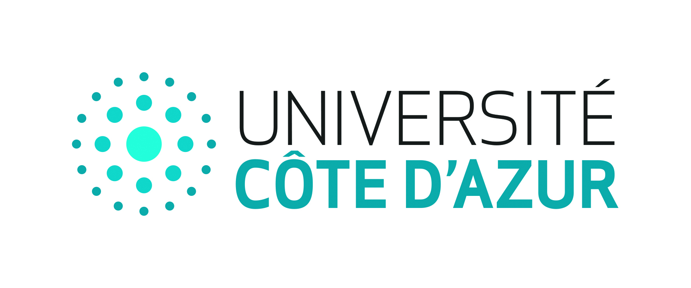

Mansour Mayaki
Maître de conférences en informatique — Université Lumière Lyon 2 (LIRIS)
IA frugale (Green AI), coût de calcul & énergie, optimisation/compression de modèles, et détection d’anomalies sur séries temporelles.